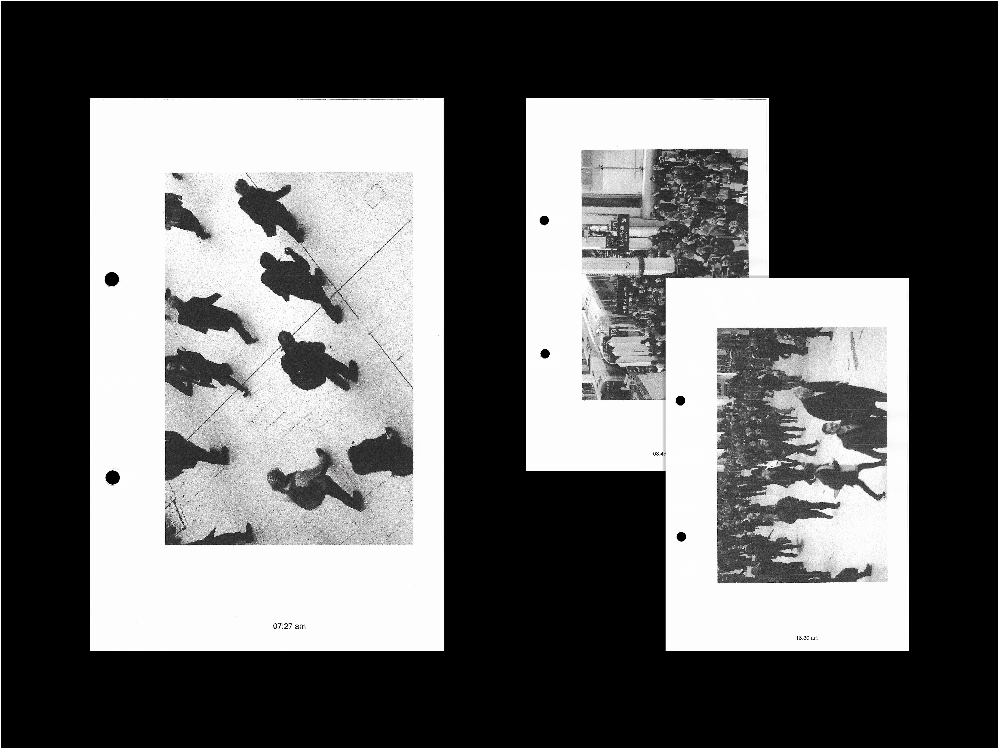
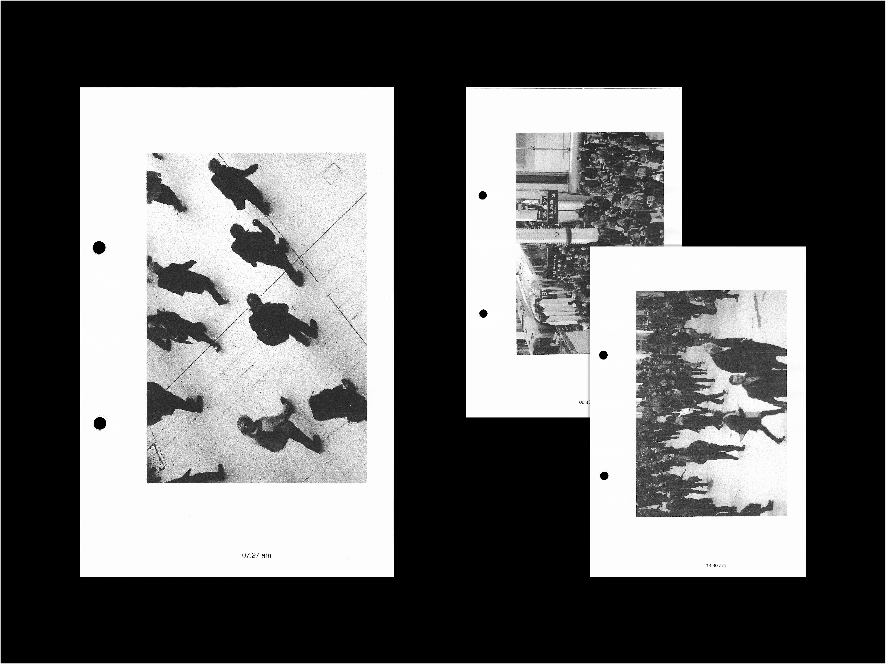

Daeun
Jeong
Rush hour
2018
‘Rush hour’ is the photography project about commuters who travel from the suburbs to London city into “the city”. Commuting is a common phenomenon in metropolitan areas of a city. It has been affected by social, political and spatial issues. As industry and commerce expanded and became increasingly centralised in cities, demand for worker’s accommodation grew and cities developed outwards. A survey reported that the average UK worker will spend 400 days of their life commuting. Commuter into London will travel for 559 days, and Londoners will spend 363 days commuting over their lifetimes. In modern society, commuting has become a social issue of in metropolitan areas. Commuting is also transforming our cities and the life-styles of people. This project aims to rethink how people live in urban areas and how it has changed their life style.
 


My practice focuses on telling the story through photography. I love to capture the moments of daily life and narrative around simple objects. I enjoy combining pure graphic design with photography to create the visual languages.